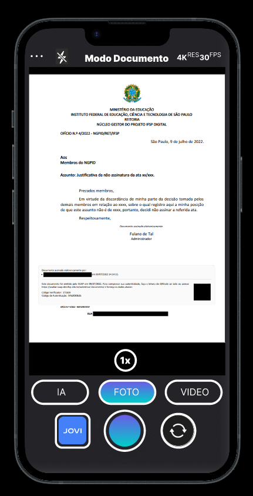

A Line Up é uma empresa criada com o objetvo de melhorar a experiencia dos usuarios das cameras jovi focada nos estudantes full time, nosso objetivo é que os usuarios consgam utlizar a camera de forma facil e rapido
Nós da Line Up decidimos implementar modos e funcionalidade que podem ajudar na utilização da camera e no da a dia do estudante full time.
Nós implementamos o modo documento que melhora a qualidade da foto focada na leitura e ajusta as bordas, o modo expressão que tira fotos em burst para poder pegar a melhor parte de cada uma e juntar em uma unica foto final, tambem implementamos um modo de assistente de IA que analisa a foto e sugeri o melhor modo para determinada situação
